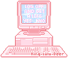

*⋆｡°✩⋆｡°✩⋆｡°✩⋆｡°✩⋆｡°✩⋆｡°✩⋆｡°✩⋆｡°✩⋆｡°✩⋆*⋆｡°✩⋆｡°✩⋆｡°✩⋆｡°✩⋆｡°✩⋆｡°✩⋆｡°✩⋆｡°✩⋆｡°✩⋆*⋆｡°✩⋆｡°✩⋆｡°✩⋆｡°✩⋆｡°✩⋆｡°✩⋆｡°✩⋆｡°✩⋆｡°✩⋆*
Home
GitHub
Travel
Useful HTML/CSS/JS links
Useful Links !
Where do I find all of these assets??
click on an item to learn more!
cute japanese emoji
CSS layout help
MP3 converter for the DJ
Catbox for hosting the MP3 files for the DJ
Windows 98 icons galore!
Remove backgrounds from images
Fun web magazines for learning to code
